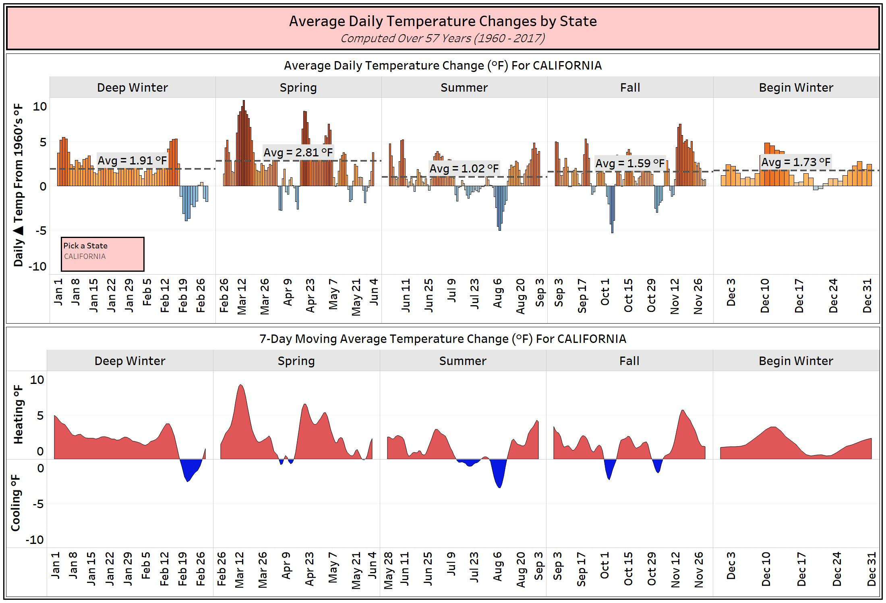

<!DOCTYPE html>
<html>
<head>
    <meta charset='utf-8' />
    <title>Display a popup on hover</title>
    <meta name='viewport' content='initial-scale=1,maximum-scale=1,user-scalable=no' />
    <script src='https://api.tiles.mapbox.com/mapbox-gl-js/v1.0.0/mapbox-gl.js'></script>
    <link href='https://api.tiles.mapbox.com/mapbox-gl-js/v1.0.0/mapbox-gl.css' rel='stylesheet' />
    <style>
        body { margin:0; padding:0; }
        #map { position:absolute; top:0; bottom:0; width:100%; }
    </style>
</head>
<body>

<style>
    .mapboxgl-popup-content {
        width: 800px;
        font: 12px/20px 'Helvetica Neue', Arial, Helvetica, sans-serif;
    }
</style>
<div id='map'></div>
<script>
mapboxgl.accessToken = 'pk.eyJ1IjoiYWxsYW53YWxrZXIiLCJhIjoiY2phbHVlOHQ4MnZscDMycGJoaTdiaHRxOCJ9.OYLAoMVg6e3Ih4r65WJuvA';

var map = new mapboxgl.Map({
    container: 'map',
    style: 'mapbox://styles/mapbox/satellite-streets-v9',
            center: [-97.922211, 39.381266],
        zoom: 2,
        pitch: 0,
        bearing: 0,
        minZoom: 2,
        maxZoom: 7
        //maxBounds: [-174.375, 8.059, -50.273, 71.965]
});

map.on('load', function() {

    // Add a layer showing the States.
    map.addLayer({
    id: "States",
    type: "fill",
    source: {
      type: "vector",
      url: "mapbox://allanwalker.49hvjob0"
    },
    "source-layer": "States",
    layout: {},
    paint: {
      "fill-opacity": 1,
      "fill-color": "rgba(0,0,0,0)"
    }
  },);
});

    // Create a popup, but don't add it to the map yet.
    var popup = new mapboxgl.Popup({
        closeButton: false,
        closeOnClick: false
    });

map.on('click', function (e) {
map.getCanvas().style.cursor = 'pointer';
var features = map.queryRenderedFeatures(e.point, { layers: ['States'] });
    if (!features.length) {
        return;
    }
var feature = features[0];
var featuredata = feature.properties.JSON;
var State = feature.properties.NAME;
var popup = new mapboxgl.Popup()
        .setLngLat(map.unproject(e.point))
        // What we will do is to point this at the Tableau URL and say if State Name = Parameter change the parameter.
        // Strongly suggest we look at sizes of the viz, the map will fill your screen no matter what size it is
        .setHTML(State+'')
        .addTo(map);
    });

    map.on('mouseleave', 'places', function() {
        map.getCanvas().style.cursor = '';
        popup.remove();
    });
;
</script>

</body>
</html>